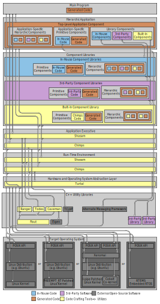

Software¶
Overview¶
The following code crafting tools are (or will be) provided as Git repositories hosted on on GitHub:
- Chierps
- Component-based hierarchic programming system. Chierps is a framework for building software by implementing and connecting message-passing software components. It provides a standardized run-time environment for inter-component communication, scheduling, timing, and logging functionality, as well as a set of generalized application executives. Component messaging interfaces and hierarchic structures are defined and generated using Pidgen.
- Grasden
- Graphical system design environment for drawing block diagrams that describe the hierarchic structure and flow of data between the subcomponents of a system. This tool can be used to graphically construct Chierps applications.
- Turtal
- The underlying run-time abstraction layer that isolates high-level code from the details related to a specific operating system, hardware, or message-passing framework implementation. This library provides a set of uniform programming interfaces for constructs like message queues, threads, file input/output, timers, and schedulers.
- Flout
- Fine-grained logging and output library that provides a standardized programming interface for the display and recording of status, event, debugging, warning, and error information.
- Pidgen
- Programming interface definition and generation tool set. This project provides a language for defining component input/output interfaces and hierarchic component structures, along with a set of utilities to generate code and documentation from these definitions. The structure of input and output data is defined using Tydl.
- Tydl
- Type definition language for specifying the structure, layout, and semantic attributes of data types. This project also provides a set of tools that can be used to generate documentation or high-level code from type specifications.
- Bt
- Build tool that manages the dependencies between software projects and automates the retrieval, configuration, and building of prerequisite software repositories.
- Wumps
- Widely useful macro programming syntax that serves as a foundation for building domain-specific languages such as Tydl and Pidgen.
- Flopi
- Fine-grained logging and output Python interface for displaying and recording status, event, debugging, warning, and error information. Flopi can operate as a pure Python module, or in conjunction with Flout when extending or embedding the Python interpreter.
Development Tools¶
The following diagram illustrates how our code crafting tools work together with external open-source software to form a software stack for application development.

Software Stack for Application Development
Run-Time Software¶
The following diagrams describe the structure and run-time software dependencies for a typical application developed using our code crafting tools. They show how user (application developer) code interacts with 3rd-party code, the code generated by our tools, the libraries we provide, and external open-source software.

Run-Time Software Stack (Conceptual)

Run-Time Software Stack (Detailed)